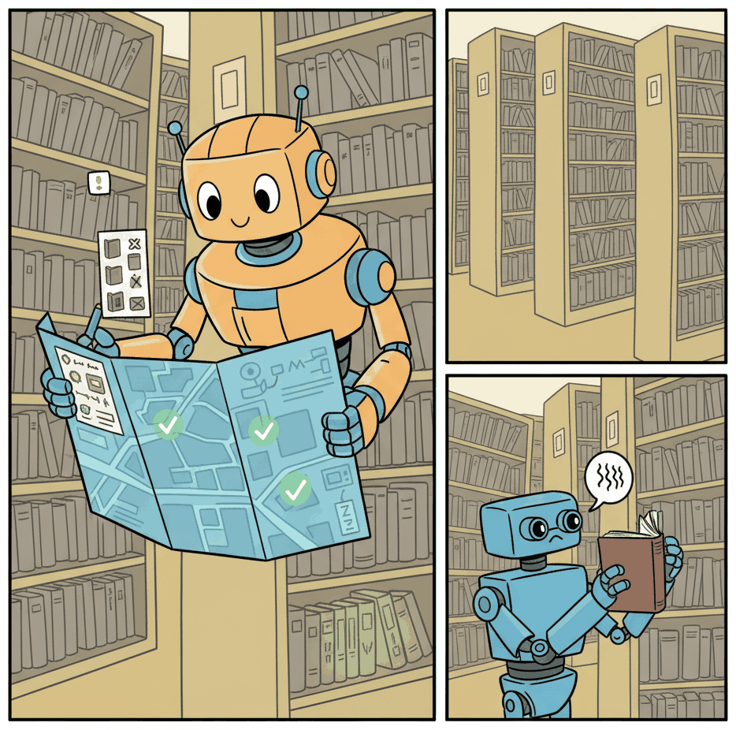

"Retrieval is not enough. Sometimes you need to search, reason, search again, and then admit you still need more evidence."
RAG, Iteratively Augmented AI Agent
Static RAG retrieves once and hopes for the best. Agentic RAG plans, retrieves, evaluates, and iterates until the answer is complete. Complex research questions rarely map to a single retrieval query. Agentic RAG gives the LLM control over the retrieval process: it decides what to search for, evaluates whether results are sufficient, generates follow-up queries, and synthesizes findings from multiple sources. This section covers Corrective RAG (CRAG), Adaptive-RAG, and Self-RAG, building on the agentic RAG foundations from Section 19.4 and the tool use patterns from earlier in this chapter.
Prerequisites
This section builds on agent foundations from Chapter 21 and LLM API basics from Chapter 11.

22.5.1 From Static RAG to Agentic RAG
Traditional RAG follows a fixed pipeline: receive query, retrieve documents, generate response. The retrieval step happens once, with no ability to reformulate the query if results are poor, no mechanism to follow up on partial answers, and no way to combine information from multiple retrieval strategies. Agentic RAG transforms retrieval into an agent capability: the agent decides when to retrieve, what query to use, how to evaluate retrieved results, and whether to retrieve again with a refined query.
This shift is significant because real information needs rarely map to a single retrieval query. A user asking "How does our pricing compare to competitors for enterprise customers?" might require: (1) retrieving the company's pricing page, (2) searching for competitor pricing, (3) finding the enterprise tier definitions, and (4) retrieving recent sales data. An agentic RAG system treats each of these as separate retrieval actions orchestrated by the agent's planning loop, rather than hoping a single query captures all the needed context.
Three key research threads have advanced agentic RAG. Corrective RAG (CRAG) evaluates retrieved documents for relevance and triggers web search as a fallback when the knowledge base lacks the answer. Adaptive-RAG classifies queries by complexity and routes simple queries to direct retrieval while routing complex queries through multi-step agentic reasoning. Self-RAG teaches the model to generate special tokens that trigger retrieval only when the model determines it needs external information, rather than retrieving for every query.
The most important improvement agentic RAG provides over static RAG is query refinement. When initial retrieval returns irrelevant results, a static RAG system is stuck. An AI agent can analyze why the results were poor (too broad, wrong terminology, missing context), reformulate the query, and try again. This single capability, retrieval with reflection, accounts for much of the accuracy improvement. Implement it before adding more complex agentic patterns.
Corrective RAG Pattern
This snippet implements a corrective RAG loop that evaluates retrieval quality and re-queries when the initial results are insufficient.
from langgraph.graph import StateGraph, END
from typing import TypedDict, List
class CRAGState(TypedDict):
query: str
documents: List[dict]
relevance_scores: List[float]
needs_web_search: bool
final_answer: str
def retrieve(state: CRAGState) -> dict:
"""Retrieve documents from the knowledge base."""
docs = vector_store.similarity_search(state["query"], k=5)
return {"documents": docs}
def evaluate_relevance(state: CRAGState) -> dict:
"""Score each document for relevance to the query."""
scores = []
for doc in state["documents"]:
score = llm.invoke(
f"Rate the relevance of this document to the query "
f"on a scale of 0 to 1.\n"
f"Query: {state['query']}\n"
f"Document: {doc['content'][:500]}\n"
f"Score (just the number):"
)
scores.append(float(score.content.strip()))
needs_web = all(s < 0.5 for s in scores)
return {"relevance_scores": scores, "needs_web_search": needs_web}
def web_search_fallback(state: CRAGState) -> dict:
"""Search the web when knowledge base results are insufficient."""
web_results = web_search_tool(state["query"])
return {"documents": state["documents"] + web_results}
def route_after_eval(state: CRAGState) -> str:
if state["needs_web_search"]:
return "web_search"
return "generate"
graph = StateGraph(CRAGState)
graph.add_node("retrieve", retrieve)
graph.add_node("evaluate", evaluate_relevance)
graph.add_node("web_search", web_search_fallback)
graph.add_node("generate", generate_answer)
graph.set_entry_point("retrieve")
graph.add_edge("retrieve", "evaluate")
graph.add_conditional_edges("evaluate", route_after_eval)
graph.add_edge("web_search", "generate")
graph.add_edge("generate", END)
22.5.2 Multi-Source Retrieval Agents
Production knowledge systems span multiple data sources: vector databases, SQL databases, APIs, document stores, and web search. An agentic RAG system treats each source as a tool the agent can invoke. The agent decides which sources to query based on the question type: factual questions about internal data go to the SQL database, conceptual questions go to the vector store, current events go to web search, and complex questions may require querying multiple sources and synthesizing results.
The agent's ability to route queries to the right source is a form of learned metadata. By including source descriptions in the tool definitions ("This database contains customer transaction records from 2020 to present" vs. "This vector store contains product documentation and user guides"), the model can make intelligent routing decisions. This source-aware routing often outperforms naive approaches that embed everything into a single vector store, because it preserves the structure and query capabilities of each data source.
Who: A chief of staff at a 500-person SaaS company who spent 10 hours per week gathering cross-departmental information for executive reports.
Situation: Company knowledge was scattered across five systems: Confluence wiki, Jira, a PostgreSQL analytics database, Slack, and Google Drive. Answering a simple executive question like "Why did Q3 revenue drop?" required manually querying three or four of these systems and synthesizing the results.
Problem: A first-generation RAG system embedded all documents into a single vector store, but it could not answer questions requiring SQL queries (revenue figures), real-time API data (Jira ticket status), or recent Slack messages. The system answered only 34% of executive questions accurately.
Decision: The team built an agentic RAG system that treated each data source as a separate tool with descriptive metadata. The agent routed "What was our Q3 revenue?" to SQL, "How do I configure SSO?" to the Confluence vector store, and multi-source questions like "Why did Q3 revenue drop?" to SQL, Jira, and Slack simultaneously, then synthesized findings.
Result: Accurate answer rate rose from 34% to 81%. The chief of staff's weekly information-gathering time dropped from 10 hours to 2 hours, with the remaining time spent verifying and contextualizing agent outputs.
Lesson: Source-aware routing that preserves each data system's native query capabilities outperforms the approach of embedding everything into a single vector store.
Agentic RAG turns retrieval from a single lookup into a research process. The core difference between static and agentic RAG is the same as the difference between a single Google search and a librarian who helps you find what you need. A static RAG system fires one query and hopes the right documents come back. An agentic RAG system evaluates what it found, identifies gaps, reformulates its approach, tries alternative sources, and synthesizes across multiple retrieval rounds. For simple factual lookups ("What is our refund policy?"), static RAG is sufficient and faster. For complex, multi-faceted questions ("How does our pricing compare to competitors for enterprise customers?"), agentic RAG is essential because no single retrieval query can capture all the needed context. See Section 19.3 for the foundational RAG pipeline that agentic RAG extends.
22.5.3 Knowledge-Grounded Agents
Knowledge-grounded agents go beyond retrieval to maintain a persistent knowledge state. Instead of retrieving fresh context for every query, they build and maintain a knowledge graph or structured memory of facts extracted from documents. When a new document is added or a conversation reveals new information, the agent updates its knowledge state. When answering questions, it reasons over this structured knowledge rather than raw retrieved text.
This approach is especially effective for domains with complex, interconnected information: medical knowledge bases, legal case law, technical documentation. The knowledge graph captures relationships (drug A interacts with drug B, regulation X applies to industry Y) that are difficult to retrieve through vector similarity alone. The agent can traverse these relationships to answer complex queries that require multi-hop reasoning across documents.
Agentic RAG adds latency and cost compared to single-pass retrieval. Each retrieval attempt, relevance evaluation, and query refinement is an additional LLM call. For high-volume, low-latency applications (autocomplete, real-time recommendations), static RAG may be more appropriate. Use agentic RAG for complex queries where accuracy justifies the additional cost, and static RAG for simple lookups where speed matters most.
Exercises
Compare static RAG (retrieve once, generate once) with agentic RAG (retrieve, evaluate, re-retrieve if needed). In what types of queries does agentic RAG provide the most improvement?
Answer Sketch
Static RAG retrieves documents once and generates an answer. If the retrieved documents are irrelevant or insufficient, the answer suffers. Agentic RAG evaluates retrieval quality and re-retrieves with refined queries if needed. It provides the most improvement for complex, multi-faceted queries where a single retrieval pass is unlikely to capture all relevant information (e.g., 'Compare the approaches of papers A and B to problem X').
Write a Python function for an agentic RAG system that queries three different sources (a vector database, a web search API, and a SQL database), merges the results, and ranks them by relevance to the original query.
Answer Sketch
Create three async tool functions, one per source. Use asyncio.gather() to query all three in parallel. Merge results into a single list with source metadata. Rank by relevance using an embedding similarity score between each result and the original query. Return the top-k results with source attribution.
An agentic RAG system retrieves documents but the agent decides they are insufficient. Describe the criteria the agent should use to evaluate retrieval quality and decide whether to re-retrieve.
Answer Sketch
The agent should check: (1) relevance (do the documents address the query?), (2) completeness (do they cover all aspects of a multi-part question?), (3) recency (is the information up to date for time-sensitive queries?), and (4) source diversity (are there multiple corroborating sources?). A simple approach: ask the LLM to rate the retrieved documents on these criteria and re-retrieve if any score is below a threshold.
Design a retrieval agent that combines vector similarity search with knowledge graph traversal. The agent first retrieves candidate entities, then traverses the graph to find related entities, and finally synthesizes the information.
Answer Sketch
Step 1: embed the query, retrieve top-k entities from the vector store. Step 2: for each entity, query the knowledge graph for neighbors within 2 hops. Step 3: score the graph-retrieved entities by path relevance. Step 4: combine vector and graph results, deduplicate, and pass to the LLM for synthesis. This hybrid approach captures both semantic similarity and structural relationships.
An agentic RAG system keeps re-retrieving documents because the LLM is never satisfied with the results. Propose three safeguards to prevent infinite retrieval loops.
Answer Sketch
(1) Maximum retrieval rounds (e.g., 3 attempts). (2) Diminishing returns detection: if re-retrieval returns substantially the same documents, stop and work with what is available. (3) Query diversity enforcement: require each re-retrieval to use a meaningfully different query, not a minor rephrasing. After the maximum rounds, the agent should generate the best answer it can with available information and flag low confidence.
- Agentic RAG lets the agent control retrieval decisions dynamically, unlike the fixed pipeline of static RAG.
- The corrective RAG pattern adds a relevance check after retrieval, triggering re-retrieval when the initial results are insufficient.
- Use static RAG for simple, well-scoped queries; use agentic RAG for ambiguous, multi-hop, or complex information needs.
Automatic tool creation. Rather than hand-crafting tool definitions, can LLMs generate their own tools from natural language descriptions or code examples? Early work shows that models can write Python functions, wrap them as callable tools, and invoke them in agentic loops, but reliability and security remain open problems (2024 onward).
Tool selection at scale. When an agent has access to hundreds or thousands of tools, how should it select the right one? Retrieval-based tool selection (embedding tool descriptions and retrieving the top-k candidates) works for moderate tool counts, but scaling to tens of thousands of enterprise APIs requires hierarchical indexing and learned routing strategies.
Universal tool interfaces. Current tool protocols (OpenAI function calling, Anthropic tool use, MCP) are converging but still incompatible in practice. Research into standardized, composable tool interfaces that work across providers and frameworks is active, with the Model Context Protocol (2024) representing one significant step.
Grounding tool outputs in reasoning. Models sometimes ignore or misinterpret tool results, especially when the output contradicts their parametric knowledge. Improving the faithfulness of tool-augmented generation, so that models reliably integrate external evidence, is an ongoing challenge.
- Toolformer (Schick et al., 2023): Self-supervised approach for teaching LLMs to decide when and how to use external tools by inserting API calls into training data.
- ToolLLM (Qin et al., 2023): Framework for tool use with over 16,000 real-world APIs, including a depth-first decision tree for planning multi-step tool calls.
- Gorilla (Patil et al., 2023): LLM fine-tuned for accurate API call generation, demonstrating that retrieval-aware training reduces hallucinated API parameters.
- AnyTool (Du et al., 2024): Hierarchical API retrieval system that scales tool selection to large API pools using a category tree and candidate screening.
Show Answer
Static RAG follows a fixed retrieve-then-generate pipeline, while agentic RAG allows the agent to decide when to retrieve, what queries to use, whether to re-retrieve, and how to combine results. The complexity is justified when queries are ambiguous, require multi-hop reasoning, or need dynamic source selection.
Show Answer
Corrective RAG adds a verification step after retrieval: the agent evaluates whether the retrieved documents are actually relevant and sufficient. If not, it reformulates the query and retrieves again. This solves the problem of the generator producing confident but incorrect answers from irrelevant retrieved context.
What Comes Next
In Chapter 23: Multi-Agent Systems, we move from single-agent tool use to systems where multiple specialized agents collaborate, communicate, and coordinate to solve complex tasks.
Foundational Papers
- Schick et al. (2023). "Toolformer: Language Models Can Teach Themselves to Use Tools." NeurIPS 2023. Introduced the idea of LLMs self-learning when and how to call external tools by generating API calls inline, establishing the conceptual basis for tool-augmented language models.
- Qin et al. (2023). "ToolLLM: Facilitating Large Language Models to Master 16000+ Real-World APIs." arXiv:2307.16789. Created ToolBench, a large-scale benchmark of real-world APIs, and trained ToolLLaMA to plan and execute multi-step API calls, demonstrating that open-source models can match proprietary ones at tool use.
- Patil et al. (2023). "Gorilla: Large Language Model Connected with Massive APIs." arXiv:2305.15334. Fine-tuned LLaMA on API documentation using retrieval-aware training, achieving state-of-the-art accuracy in generating correct API calls and reducing hallucination of nonexistent API parameters.
- Anthropic (2024). "Model Context Protocol (MCP) Specification." Anthropic Technical Report. Defines an open standard for connecting LLMs to external tools and data sources through a unified client-server protocol, enabling interoperability across tool providers.
- Shen et al. (2023). "HuggingGPT: Solving AI Tasks with ChatGPT and its Friends in Hugging Face." NeurIPS 2023. Demonstrated an LLM orchestrating hundreds of specialized AI models as tools, using task planning, model selection, and result aggregation to solve complex multimodal tasks.
- Hao et al. (2023). "ToolkenGPT: Augmenting Frozen Language Models with Massive Tools via Tool Embeddings." NeurIPS 2023. Proposed representing each tool as a token embedding ("toolken"), allowing frozen LLMs to learn tool selection through the same next-token prediction mechanism used for language generation.
Tools and Frameworks
- OpenAI Function Calling (platform.openai.com/docs/guides/function-calling). Official documentation for OpenAI's function calling API, including JSON Schema definitions, parallel tool calls, and structured output integration.
- Anthropic Tool Use (docs.anthropic.com/en/docs/build-with-claude/tool-use). Anthropic's guide to tool use with Claude, covering tool definitions, input schemas, streaming tool calls, and best practices for reliable tool integration.
- LangChain Tools (python.langchain.com/docs/concepts/tools). LangChain's tool abstraction layer provides a unified interface for wrapping APIs, functions, and external services as callable tools for LLM agents.
- Model Context Protocol SDK (github.com/modelcontextprotocol). Reference implementations of the MCP specification in TypeScript and Python, with client and server libraries for building interoperable tool providers.
- Google Gemini Function Calling (ai.google.dev/gemini-api/docs/function-calling). Google's function calling API for Gemini models, supporting automatic and manual function call modes with native JSON Schema tool definitions.